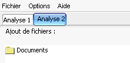

Onglets
Baldr se compose en faite de plusieurs fenêtres principales, identifiées chacune par un onglet.

Vous pouvez ouvrir une dixaine d'onglets en parallèle, soit autant d'analyses réalisables en parallèle.
Pour ouvrir ou fermer un onglet, il suffit d'utiliser les boutons situées en dessous de la liste des fichiers à analyser ( ou
ou  )
)